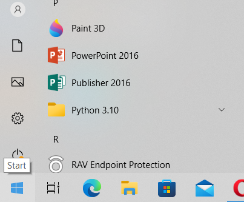
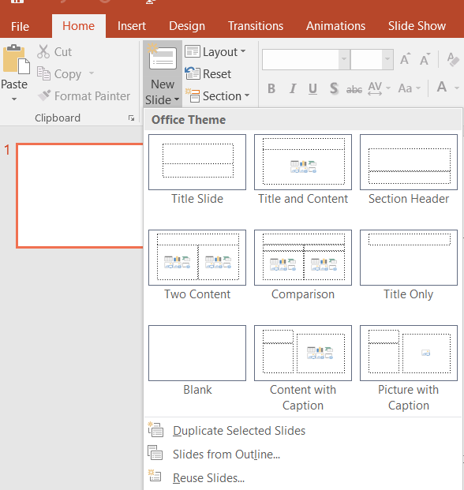
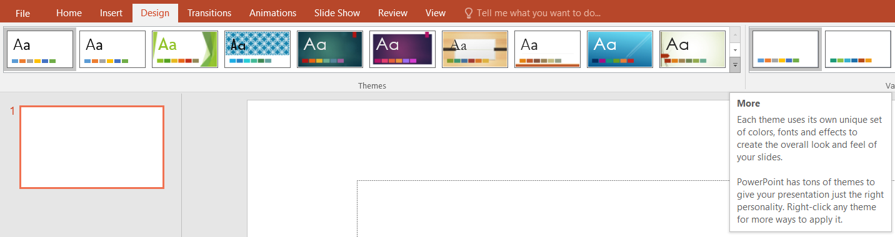
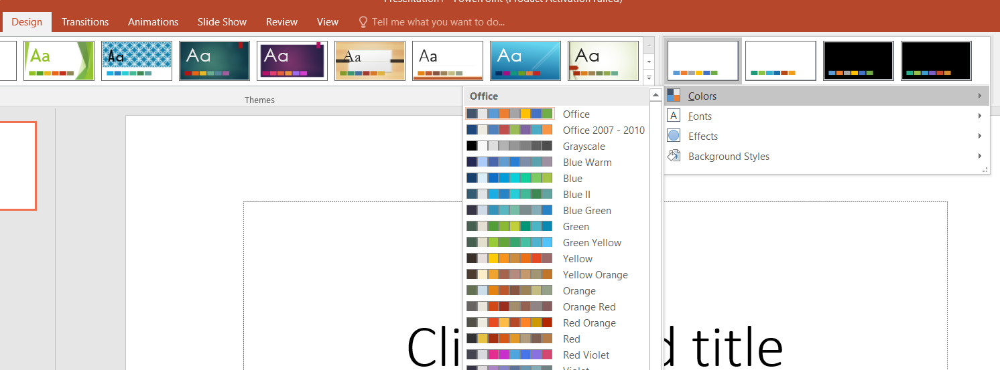
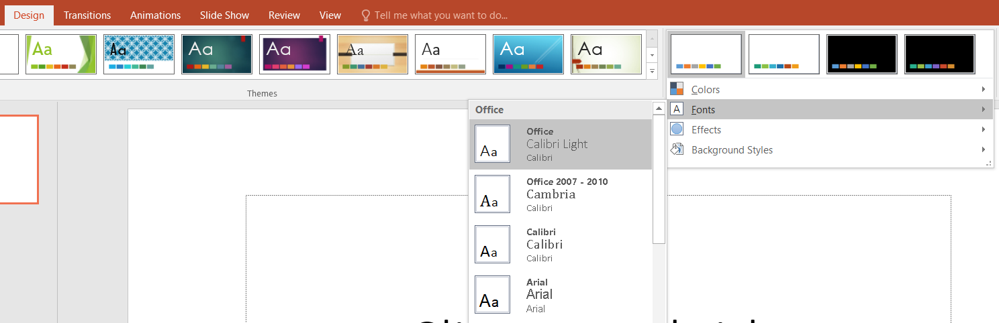
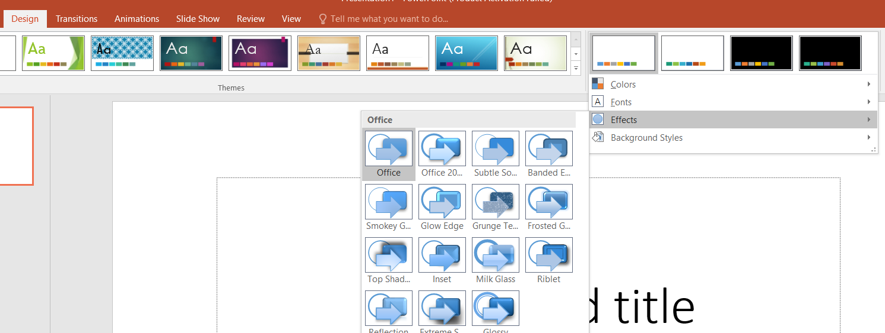
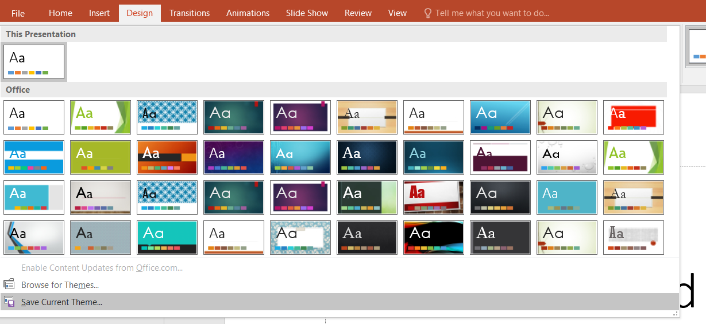

Start → Microsoft Office → PowerPoint 2016.

Sau dublu clic pe pictograma de pe desktop
Fila Pagină de pornire (Home) → grupul diapozitive (Slides) → clic pe Diapozitiv nou (New Slide) → selectaţi un tip de diapozitiv din galeria de aspecte. 
Fila Proiect (Design) → Grupul Teme (Themes) → clic pe Mai mult.. (More) → clic pe tema dorită.

În PowerPoint, aveţi posibilitatea să aplicaţi o temă de document pentru toate diapozitivele (All Slides), sau numai pentru cele selectate (Selected Slides). Faceţi clic cu butonul din dreapta pe tema de document, apoi faceţi clic pe opţiunea dorită.
Fila Proiect (Design) → Grupul Teme (Themes) → clic pe Culori temă (Colors) → clic pe setul de culori dorite sau creaţi o nouă temă de culori (Create New Themes Colors).

Fila Proiect (Design) → Grupul Teme (Themes) → clic pe fonturi temă (Fonts) → clic pe fontul dorit sau creaţi o nouă temă de fonturi (Create New Themes Fonts).

Fila Proiect (Design) → Grupul Teme (Themes) → clic pe efecte tematice (Effects) → selectaţi efectul pe care doriţi să-l utilizaţi.

Fila Proiect (Design) → Grupul Teme (Themes) → clic pe Mai mult.. (More) → clic salvare temă curentă (Save Current Theme) →tastaţi un nume pentru temă (File name) → clic pe butonul Salvare (Save)
